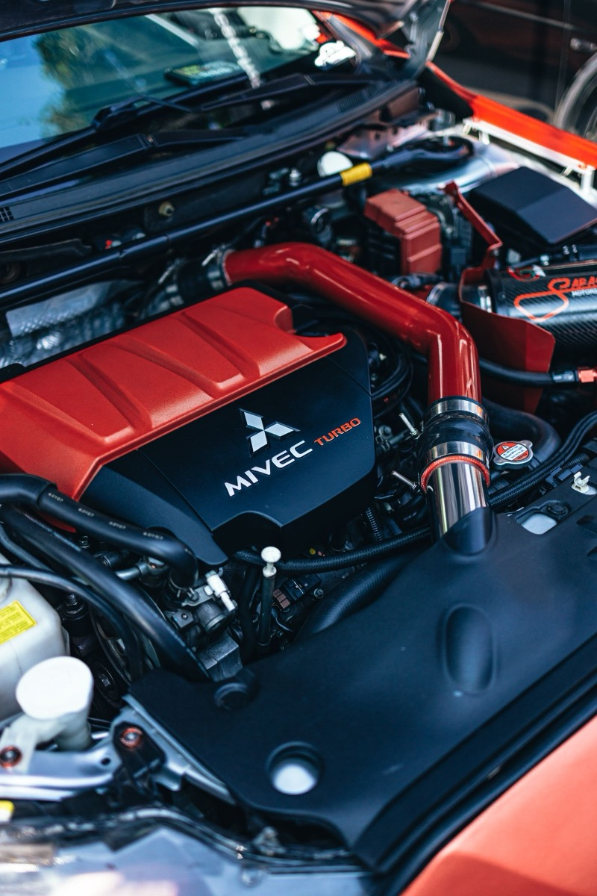

Civic Si Bolt-Ons and Tune: What to Buy First, and What It Actually Gains
The 1.5T in the Civic Si is the rare engine where the cheapest single purchase out-gains every hard part combined — and the manufacturer of the tuning software publishes the dyno sheet to prove it. KTuner's own page for the 2017–2021 Si lists a 23 PSI basemap at +56 lb-ft of torque and +34 whp peak-
The tune is the whole purchase. KTuner’s own published dyno sheet for the 17–21 Si claims +56 wtq and +34 whp from a 23 PSI basemap, and +75 wtq / +65 whp on E35. No cat-back on this platform publishes a number at all — and the tune costs $749 while the most-reviewed exhaust costs $999.99.
KTuner lists seven boost levels for one car — factory, 19.5, 21.5, 23 PSI, plus dual-mode maps that split them across the Normal and Sport buttons. The Sport button stops being a throttle map and becomes a boost switch.

The 1.5T in the Civic Si is the rare engine where the cheapest single purchase out-gains every hard part combined — and the manufacturer of the tuning software publishes the dyno sheet to prove it. KTuner’s own page for the 2017–2021 Si lists a 23 PSI basemap at +56 lb-ft of torque and +34 whp peak-to-peak, with 35–40 whp in the midrange. With their flex fuel kit on E35, that becomes +75 lb-ft and +65 whp.
No cat-back exhaust in this sweep publishes a dyno figure at all. Not one. That is not an accident of marketing — it is the honest state of the category, and it tells you where to spend first.
What this engine is
The Si has used a 1.5-litre turbocharged four since 2017, in two generations that differ far less than the bodywork suggests. Both are rated on premium fuel.
| Generation | Years | Engine | EPA combined (manual) | City / highway |
|---|---|---|---|---|
| 10th gen Si | 2017–2020 | 1.5L turbo I4 | 32 (2017–2019), 30 (2020) | 28/38 (2017–19), 26/36 (2020) |
| 11th gen Si | 2022+ | 1.5L turbo I4 | 31 | 27/37 |
Those are the EPA’s own per-model figures, and the 2020 drop is real: the EPA lists the 2020 Si 4-door manual at 30 combined where the 2018 and 2019 cars are 32. If you are cross-shopping a 2020 against a 2019 and fuel cost matters, that is a two-mpg difference on the same engine.
The practical point is that premium fuel is specified in every year, and every KTuner map in the table below is written for 91 octane or better. Running a 23 PSI map on 87 is not a shortcut; it is how you get knock.

The tune, in the manufacturer’s own numbers
These are KTuner’s published claims for their own calibrations, read off their site. They are not independent dyno results and this guide does not present them as such — but they are the manufacturer’s own, which makes them far more useful than a vendor’s rounded “up to +40 hp.”
| Calibration | Claimed gain over factory | Notes |
|---|---|---|
| 17–21, 23 PSI basemap | +56 wtq, +34 whp peak, 35–40 whp midrange | 91+ octane |
| 17–21, 23 PSI + flex fuel (E35) | +75 wtq, +65 whp peak, 60–65 whp midrange | Requires the flex fuel kit |
| 22+, Stage 1 (18 PSI Sport) | +32 lb-ft, +30 whp | Factory boost in Normal |
| 22+, Stage 2 (21 PSI) | +52 lb-ft, +47 whp | |
| 22+, Stage 2 + E30 | +69 lb-ft, +63 whp | Requires flex fuel |
Two things stand out. First, the 11th-gen car gains less on the same Stage 2 file — +47 whp versus +34 whp peak on the 10th, but with a smaller torque number than the older car’s 23 PSI map. The newer ECU is more tightly controlled, and KTuner’s own numbers show it. Second, the ethanol jump is enormous on both: E35 adds roughly 30 whp on top of the pump-gas map.
KTuner sells the hardware two ways, both live-priced:
KTuner Flash V2 Touch → $749.00 · 248 reviews · checked 17 Nov 2026
The V2 is the all-in-one display that holds the tunes and datalogs on the unit itself. The V1.2 is $200 cheaper and needs a laptop. Neither one is CARB-certified — see the section at the end, because on this platform that matters more than usual.

What the tune actually changes, feature by feature
The interesting part of KTuner’s feature list is not the power — it is how many driveability complaints it addresses by name. From their published matrix for the 17–21 Si, every one of these is a final, shipping feature:
- Rev hang disable. The Si holds revs between shifts for emissions. Turning that off is the single most-praised change in owner reports, and it is a checkbox, not a tune.
- Throttle dampening removal — their words for the soft, delayed throttle the factory map has off the line.
- Boost by gear, so first and second can be capped while third and fourth get the full target.
- Dual boost targets split across Normal and Sport.
- On-the-fly map switching, so you can change calibrations without reflashing.
- Real-time logging of every sensor the ECU sees.
That list is why the tune is worth more than the exhaust on this car even setting power aside. You are buying behaviour, not just a number.
The parts, priced
Six bolt-ons, all read live from the same retailer on 19 November 2026.
| Part | Fitment | Price | Reviews |
|---|---|---|---|
| MAPerformance front pipe | 16–21 Civic X 1.5T | $349.99 | 46 |
| PRL 3” front pipe | 16–21 Civic 1.5T | $429.00 | 19 |
| MAPerformance catted downpipe | 16–21 Civic 1.5T | $599.99 | 85 |
| MAPerformance downpipe | 22+ Civic / Si 1.5T | $599.99 | 17 |
| Invidia catted 70mm downpipe | 16–21 EX/Touring/Si | $861.27 | 2 |
| MAP cat-back, sedan | 17–21 Si sedan | $999.99 | 209 |
| MAPerformance cat-back | 22+ Si | $949.99 | 48 |
| KTuner V2 Touch | multiple Honda/Acura | $749.00 | 248 |
The review counts are the most useful column here, and they say something the prices do not. The 16–21 catted downpipe carries 85 reviews — more than double the 22+ car’s 17 on an identical price. That is not a fitment difference; it is that the older car has been out long enough for people to actually buy parts for it, and the newer one has not.
MAP cat-back, 17–21 Si sedan → $999.99 · 209 reviews · checked 17 Nov 2026
The order to buy things
Tune first, always. At $749 it is cheaper than the most-reviewed cat-back, it is the only purchase on this page with a published dyno sheet, and it is the one that fixes rev hang and throttle response. Nothing else on the list changes how the car feels from the driver’s seat as much.
Downpipe second, if you want more. The catted downpipe is the highest-value hard part on a turbo car because it is the restriction closest to the turbine. $599.99 gets you the 16–21 piece with 85 reviews behind it. This is also the part that starts the emissions conversation — see below.
Cat-back third, and buy it for sound. With 209 reviews the MAP sedan system is the best-evidenced exhaust in this whole sweep of the catalog. Buy it because you want to hear the car. Do not buy it expecting the dyno sheet that does not exist.
Front pipe last. At $349.99 it is the cheapest pipe in the table and the least consequential. It is a supporting part for a downpipe, not a first purchase.
Flex fuel only if you have E85 nearby. It is the single biggest gain on the page — E35 turns the 17–21 car’s +34 whp into +65 — but it is worthless without a station you can actually reach, and it locks you to the pump.
What owners actually complain about
The review counts point at something a spec sheet cannot. The 17–21 Si has the thickest aftermarket evidence of any compact in this sweep — 209 reviews on the sedan cat-back, 85 on the catted downpipe, 46 on the front pipe — and that depth means the failure modes are already documented rather than waiting to be discovered.
The pattern across those listings is fitment, not function. Coupe and sedan are
different systems with different part numbers, and the listings say so in capitals
for a reason: MAP sells HDAX-CBE-SN for the sedan and HDAX-CBE-CPE for the
coupe, and buying the wrong one is the most common mistake. The 209-review system
and the 171-review coupe system are not interchangeable.
The 22+ car is the opposite situation. Its cat-back carries 48 reviews, its downpipe 17, and KTuner’s own feature matrix lists fewer things as final on the newer ECU. If you own an 11th-gen Si, you are earlier in the curve and the aftermarket has less to tell you yet.
What the tune does not fix
Worth saying plainly, because a $749 flash gets oversold: it does not address the oil dilution issue that the 1.5T has been discussed for since 2017, it does not change the clutch, and it does not make the car a Type R. A 23 PSI basemap on a car with 200,000 miles on its original clutch will find that clutch quickly. If you are near a clutch replacement, that is the purchase to make first.
It also does not carry a warranty. KTuner’s own site is explicit that the software is for off-road testing and that the vehicle should be flashed back to factory before driving on a public road — that sentence is there for a reason, and it is the sentence a dealer will point at.
The CARB question, which on this car is the whole question
None of the parts above state a CARB Executive Order number on their listings. Neither does KTuner’s own product page or its Si application page — the site carries a prominent notice that the software is “for off-road research and development testing only” and that every vehicle should be flashed back to factory before being driven on a public road.
So the honest summary, and it is not a comfortable one: without an EO number, a downpipe and a tune are not legal for street use in California and will fail a smog visual inspection. For the cat-back the position is different — a cat-back sits behind the converter and does not touch emissions equipment — but no listing here states its status either way, and silence is not clearance. Ask the seller for the EO number before you buy, and if they cannot produce one, assume there isn’t one.
If you are in a state that inspects, the tune is the part to think hardest about, because a flashed ECU is not something you can quietly leave in place at test time. KTuner’s own documentation says to flash back to stock — which is also the answer to “can I undo this,” and it is yes.
CarModReview may earn a commission from purchases made through links on this page, at no extra cost to you.
Topics
- Tuning